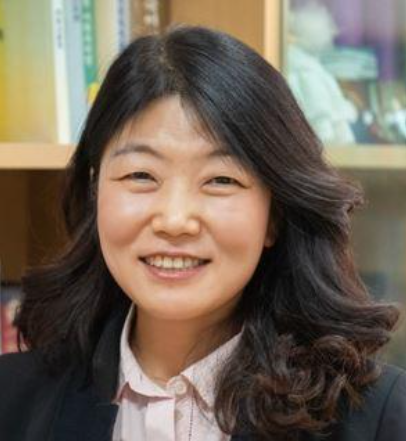

남길임Kilim Nam
교수 · Kilim Nam Professor
연세대학교 국어국문학과 Department of Korean Language and Literature, Yonsei University

말뭉치를 기반으로 한국어 어휘 문법을 기술하고, 말뭉치 기반·주도 연구를 통해 모국어화자의 언어 유창성의 원리를 밝히는 데 관심이 있다. 사용역(register)에 따라 달리 실현되는 어휘와 문법의 양상을 연구해 왔으며, 2012년 이후 연도별 신어 사전 구축을 통해 매체에 따라 달리 나타나는 언어 역동성을 관측해 오고 있다. 최근에는 실시간 신어의 탐지와 사전 기술, 거대언어모델(LLM)의 언어 능력 평가로 연구를 넓혀 가고 있다. 현재 인공지능시대 말뭉치언어학의 설명가능성과 재현가능성을 확보한 한국어 연구, 한국어의 유형론적 특성을 고려한 말뭉치 연구 방법론, 말뭉치·거대언어모델·인간 전문가의 삼각측량 방법론을 연구하고 있다. 국제 네트워크로는 아시아사전학회 보드멤버, 유럽언어혁신연구회(ENEOLI) 회원으로 활동하고 있으며, 글로벌인문사회융합 연구로 영국 랭카스터대학교 UCREL NLP 그룹과 협업하고 있다.
My work describes Korean lexis and grammar on the basis of corpora, and asks what underlies the linguistic fluency of native speakers through corpus-based and corpus-driven research. I have studied how vocabulary and grammar are realised differently across registers, and since 2012 have compiled annual neologism dictionaries to observe how language changes across media. More recently my work has extended to the real-time detection of neologisms, their lexicographic description, and the evaluation of large language models (LLMs). My current interests are Korean studies that secure the explainability and reproducibility of corpus linguistics in the age of artificial intelligence, corpus research methodologies that take account of the typological characteristics of Korean, and triangulation methods that combine corpora, large language models, and human experts. I serve as a board member of ASIALEX and a member of ENEOLI, and collaborate with the UCREL NLP Group at Lancaster University, UK, on convergence research in the humanities and social sciences.
연구 분야Research Interests
- 한국어 말뭉치언어학Korean Corpus Linguistics
- 사전학Lexicography
- 한국어 어휘론Korean Lexicology
- 한국어 문법론Korean Grammar
경력Appointments
- 2024.03 – 현재– present 연세대학교 국어국문학과, 교수 Professor, Department of Korean Language and Literature, Yonsei University
- 2005.02 – 2024.02 경북대학교 국어국문학과, 교수 Professor, Department of Korean Language and Literature, Kyungpook National University
- 2003.10 – 2005.01 연세대학교 언어정보연구원, 연구교수 Research Professor, Institute of Language and Information Studies, Yonsei University
- 2002.10 – 2003.10 연세대학교 국학연구단, 연구교수 Research Professor, Korean Studies Research Group, Yonsei University
- 2001.09 – 2002.09 연세대학교 언어정보연구원, 전임연구원 Researcher, Institute of Language and Information Studies, Yonsei University
- 1996.09 – 2001.08 연세대학교 언어정보개발연구원, 연구원 Researcher, Institute of Language and Information Development, Yonsei University
학력Education
- 1996.09 – 2001.08 박사, 연세대학교 대학원 국어국문학과, 국어학 (통사론) Ph.D., Department of Korean Language and Literature, Yonsei University, Korean Linguistics (Syntax) 학위논문 「이다 구문 연구」 · 지도교수 남기심 Dissertation: 「이다 구문 연구」 · Advisor: Kisim Nam
- 1994.09 – 1996.08 석사, 연세대학교 대학원 국어국문학과, 국어학 (통사론) M.A., Department of Korean Language and Literature, Yonsei University, Korean Linguistics (Syntax) 학위논문 「-겠- 결합 양상의 종속접속문 연구」 · 지도교수 남기심 Thesis: 「-겠- 결합 양상의 종속접속문 연구」 · Advisor: Kisim Nam
- 1990.03 – 1994.02 학사, 연세대학교 국어국문학과 B.A., Department of Korean Language and Literature, Yonsei University